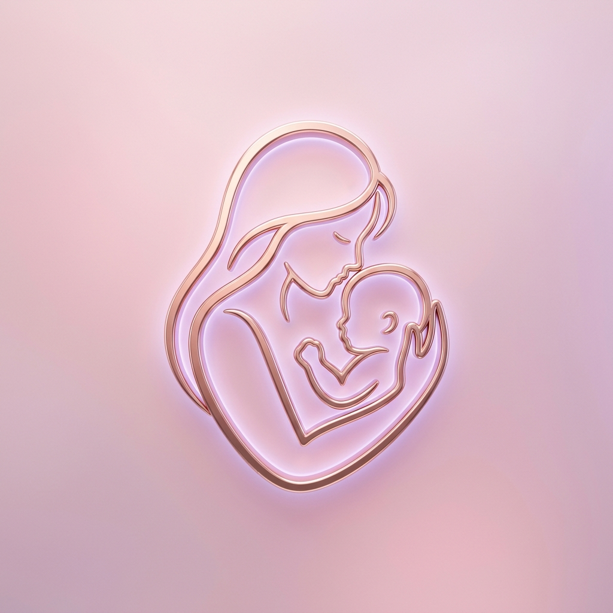
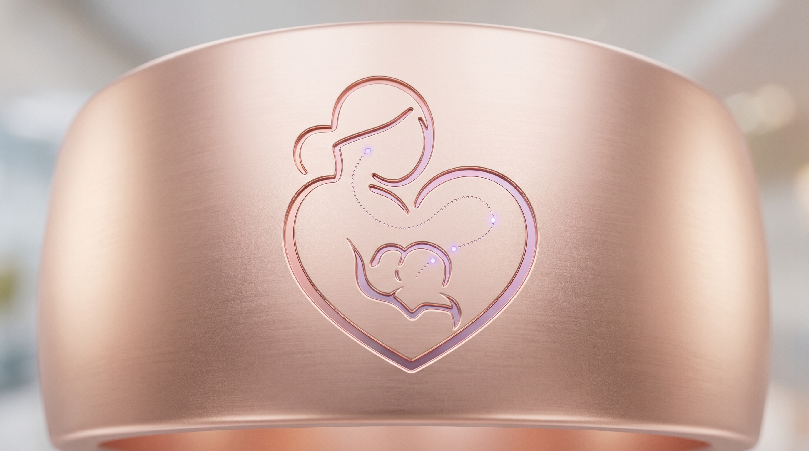

An AI-powered ecosystem connecting mothers, ASHA workers, PHCs and hospitals through continuous real-time monitoring — securing the dangerous gap between ANC visits.
Pregnant women receive only 4–6 ANC visits across 9 months. Between visits: no monitoring, no alerts, no continuity of care.
When emergencies arrive, doctors lack vital health history. Complications develop silently. Every week of silence is a risk.
Designed to feel like jewellery. Built to function like a medical device. Worn continuously. Monitoring silently.

Every stakeholder connected. Every signal monitored. Every emergency intercepted before it becomes critical.
"Zero gaps. Continuous care. Every mother. Every week."
AI analyses continuous vitals to detect preeclampsia, anemia progression, and gestational diabetes indicators before symptoms appear.
When risk elevates, the nearest ASHA worker is notified within seconds — with context, history, and recommended action.
Every data point across 9 months builds a complete maternal health graph — available to doctors in real time during emergencies.
Join hospitals, researchers and healthcare leaders building the operating system for maternal care in India.
Login / Register